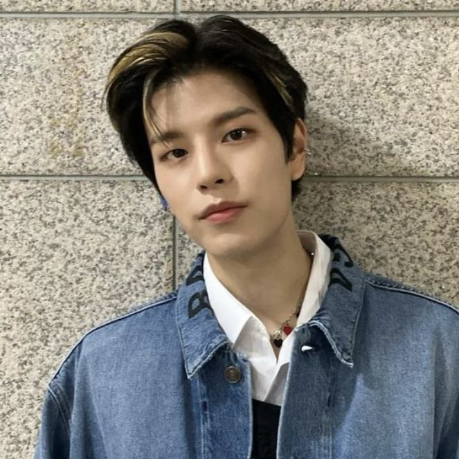

.jpg)
.jpg)
INTEGRANTES:
.jpg)
NOMBRE: Christopher Bang
NACIMIENTO: 3/10/1997 Seoul, corea del sur
POSICION: lider, vocalista, compositor y productor
ESTATURA: 1.71m
.jpg)
NOMBRE: Hwang Hyun-jin
NACIMIENTO: 20/03/2000 Seoul, corea del sur
POSICION: rapero, bailarin y modelo
ESTATURA: 1.79m

NOMBRE: Felix Lee
NACIMIENTO: 15/09/2000 Sidney, Australia
POSICION: rapero y bailarin
ESTATURA: 1.71m

NOMBRE: Han Jisun
NACIMIENTO: 14/09/2000 Incheon, corea del sur
POSICION: rapero, letrista, compositor y productor
ESTATURA: 1.69m

NOMBRE: Kim Seung-min
NACIMIENTO: 22/09/2000 Samseong-dong Seoul, corea del sur
POSICION: cantante y bailarin
ESTATURA: 1.75m
 ‚ÅÄ „Ö§€™ ¬†‡≠®‡≠߬†¬†ÏÑùÏßÑ.jpg)
NOMBRE: Seo Chang-bin
NACIMIENTO: 11/08/1999 Yongin-si, corea del sur
POSICION: rapero y compositor
ESTATURA: 1.69m

NOMBRE: Lee Min_ho
NACIMIENTO: 25/10/1998 Daegot-myeon, corea del sur
POSICION: cantante, rapero y bailarin
ESTATURA: 1.72m

NOMBRE: Yang Jeong-in
NACIMIENTO: 08/02/2001 Sunjeong-dong, Busan, corea del sur
POSICION: cantante y bailarin
ESTATURA: 1.70m
.png)